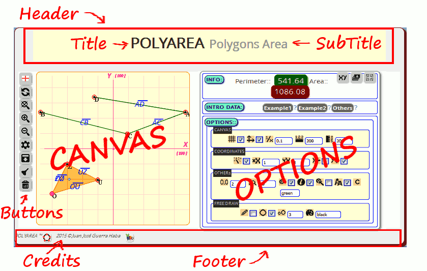

Library of creation, handling and calculation of plane geometric figures.
With this library you can create PolyArea objects that becomes a conglomerate of geometric figures grouped as points, segments and Polygons.canvasShapes - PolyArea v1.0.0
copyright @ 2015 - Juan José Guerra Haba <dinertron@gmail.com>License: Free. GPL.v3
canvasShapes Tutorial
Introduction:
Given that the HTML5 canvas element is pure 'bitmap drawing' can not be interpreted as elements drawn objects.
This is the great achievement of canvasShapes: Convert and interpret the elements drawn on the canvas as objects, and can thus increase its manageability and assign events, allowing user interactivity not achieved with a simple 'canvas HTML'.
Of course all this has penalty in terms of memory consumption, but it is acceptable in drawings with no more than a few hundred objects.
Una vez que se familiariza con la GUI se dará cuenta que canvasShapes puede utilizarse para multitud de usos, desde dibujos de simples figuras geométricas hasta algo más elaborado como un sencillo plano o un simple esquema.
Once familiar with GUI will notice that canvasShapes can be used for a multitude of uses, from drawings of simple geometric figures to something more elaborate as a simple technical scheme.
Even using some imagination, it could be a good platform for what is known as 'Cartesian Art', which is something that has caught my attention a long time and examples can be found even in 'wikipedia'.
As a postscript I would say that canvas Shapes can be used in whatever is Cartesian representation of an object.
Load Script:
The first step, of course, begins by loading the script in the Head page, for example:
<script type="text/javascript" src="canvasShapes.js"> </script>
The script creates a GLOBAL namespace: canvasShapes ; is the only global variable created, all other objects, variables, functions and methods used hanging from it, thus preventing polluting the global space.
The library implements a full GUI, and all we need to create it is to call your render (...) method.
We can write code (in a < script >) to create the graphical interface with passing initialization parameters in Javascript object format:
//the 'id' property corresponds to the id of a container element where to locate the drawing canvas
var obj = { id:"canvas1", language:"en-GB" }
var pol = canvasShapes.render( obj );
//Now, the 'pol' variable refers to the created 'PolyArea' object
...
Optional:
This method returns a 'PolyArea' object that we can capture, if we need to, and modify to have full control of the library.
Although, in principle, it not is necessary because the graphical interface itself have the means to build and modify all types of figures.
Options:
As already mentioned, the canvas Shapes.render (obj) method supports a object with multitude of options for initializing UI all. Here is a list of almost all of them provides:
- id: [string] Generally represents the 'id' of container element of the entire graphical interface for PolyArea. It can also be the ID of an existing canvas to embed and manage.
- language: [string, DEFAULT: "en-GB"] Graphical interface language. English default.
- canvas: [HTMLCanvasElement] Canvas drawing object. Normally it is automatically generated.
- container: [HTMLElement] It becomes the container element of the entire GUI PolyArea.
- UI OPTIONS: showTitle, showSubTitle, showCredits: [boolean, DEFAULT: true] Respectively tells whether it shows title, subtitle and credits in the UI.
It would be appreciated allowed to display the credits in some way as a recognition. - BLOCKS: polyAreaHeader, showBody, polyAreaFooter: [boolean, DEFAULT: true] Specify whether to display areas respectively header, body and foot in the UI. Basically they can contain:
- 'polyAreaHeader': title and subtitle.
- 'showBody': menu buttons, actions fields and useful information.
- 'polyAreaFooter': basically it contains the credits. - canvasDataTitle, canvasDataInfo, canvasDataIntro, canvasDataOptions, canvasDataButtons: [boolean, DEFAULT: true] Indicates other subareas of the UI, for example 'canvas DataIntro' area it contains the coordinates and data entry.
- BUTTONS: showUIButtons, btnCanvasFlag, btnCanvasRedraw, btnCanvasZoom, btnCanvasOptions, btnDownCanvasImage, btnCanvasClean, btnCanvasReset: [boolean, DEFAULT: true] These represent Action buttons the UI, for example you used 'btnDownCanvasImage' for download the drawing canvas as a PNG image.
- EVENTS: mousePoints, mouseInfo, mouseDrop: [boolean, DEFAULT: true] Show all mouse events that allow you to insert points, get information when putting the mouse cursor over them and even drag on the canvas to reposition.
- FREEDRAW: freeDraw, freeDrawSize, freeDrawColor, freeDrawRounded [mixture] Management the free drawing mode. They are respectively of type 'boolean', 'numeric', 'string' and 'boolean'.
- GENERICS: grid, axes, canvasWidth, canvasHeight, autoProportion, decimals, fill, gradient, showNames, canvasSquared: This represent the UI action buttons.
Although most are the 'boolean' type, some, for example, 'decimals' or 'canvasWidth' are numeric, even some there are 'object' type as 'gradient' representing an object for filling the figures and is constructed with the 'createLinearGradient (...)' method of canvas context. - OTHERS: cleanAllIfEmpty, fractionGrid, deformation, proportionX/Y, invertX/Y, zoomIn/Out, coordinatesCentred, ... ... and any more.
Although all of them the only imperative would actually be 'id'.
Although there has been an effort to make the library is cross-browser, depending on the values of certain options can be seen any difference depending on the browser used.
GUI:
The graphical interface constructs itself and is embedded in the element with the 'id' passed as a parameter. All the code you need (javascript, css, html) is defined in the library module called 'canvasShapes.UI.js', it is responsible for displaying the different areas of the interface, where we can observe the following:
Through the Options button access that area where we can modify many parameters, some affect the figures represented, others to the canvas. We can also enter or modify coordinate data directly with 'text' format. (Explained in more detail in the section Coordinates)
These parameters represent some of the properties of the previous section (Options) but visually. The correspondence table is as follows:
| Group | Ico/Prop | Ico/Prop | Ico/Prop | Ico/Prop | Ico/Prop |
|---|---|---|---|---|---|
| CANVAS: | grid | axes | fractionGrid | canvasWidth | canvasHeight |
| COORD.: | autoProportion | proportionX | proportionY | invertX | invertY |
| decimals | zoomSize | mouseDrop | mouseInfo | mousePoints | |
| OTRAS: | showNames | fillColor | |||
| FREEDRAW: | freeDraw | freeDrawRounded | freeDrawSize | freeDrawColor |
The most important area is the canvas (obviously), where points can draw directly with the mouse, drag them to another position or create segments by dragging a point on another. You can also select shapes one by one, or select multiple with the Ctrl key pressed.
To select a segment must to be done 'click' on its central point, and polygons must find its center of gravity or centroid that it will highlight as a small circle.
Buttons:
The most important actions are represented as buttons. This keypad is divided into two parts: the main area is always visible, and a secondary part located in the options area.
- MAIN:
- Language: Displays the language flag set. Currently it hasn't action associated.
- Refresh: Refresh or canvas update, REDRAW.
- Zoom Restore: Zoom restore to original state.
- Zoom In: Canvas zoom in.
- Zoom Out: Canvas zoom out.
- Options: Show / hide the options area.
- Download: Download the canvas as image.
- Clean: Clean to canvas, but without destroy the created shapes.
- Erase: Clean to canvas and DESTROY the created shapes.
- SECONDARY: (options area)
- Coordinates: Shows / hides the coordinates input area.
- Grouped: Groups together all selected figures in a single polygon.
- Select: Select all created shapes.
Coordinates:
All shapes are interpreted and drawn as geometric figures, implying that are represented as a set of coordinates on a Cartesian plane. This is the mathematical form (geometric) to work with points, segments and polygon, and this is how it can be displayed on the axis coordinate.
This Cartesian coordinate representation is recorded, although by default hidden in the area of INPUT DATA; if we interested we must press the button where us will show something like this:
- X coordinates: It represent all Xs of all figures drawn on the canvas.
- Y coordinates: It represent all Ys of all figures drawn on the canvas.
- XY coordinates: They represent all pairs of coordinates XYs grouped by polygons created.
It only remains to encourage the user to use this library to which insurance may be given a thousand and one uses. To start you can experiment with the proposed examples to get familiar with it.